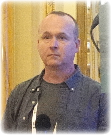
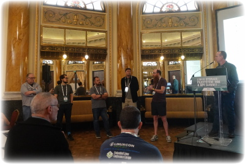
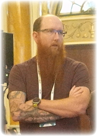

Reviewing kernel patches with LLMs
In a plenary session at the 2026 Linux Storage, Filesystem, Memory Management, and BPF Summit, the state of patch review using large language models (LLMs) was discussed. It is a topic that has been swirling around in the kernel community for much of the year. The plenary, which was led by Roman Gushchin, Chris Mason, Josef Bacik, and Sasha Levin, resulted in a quite bit of discussion, so much that a second filesystem-track-only (though others surely sat in) slot was used to continue it later in the day.
Gushchin began with a slide depicting Bag End, labeled with
"LLMs", which was a joke, he said, because whether we like it or not, they
are "coming to our pleasant code
". The same slide had a graph of
first-time contributors from
the development statistics article for Linux
7.0, which showed a sharp, roughly 50%, increase for that kernel. That
is part of why he started working on Sashiko to help
provide additional code review.
There are already static-analysis tools being used on kernel code and, of course, there are human reviewers as well. Sashiko sits somewhere in between those two and shares properties, both good and bad, with both. For example, the output is probabilistic, so different results will be produced each time it is run. That is like human reviewers in some ways, since maintainers and others will often spot different problems each time they review a patch set.
Another aspect that is similar to human review is that Sashiko's review is also of lower quality for large patches and patch sets. It can also be biased by the commit log. At one point, Sashiko found a bunch of problems in a patch set, but the commit log said it fixed real bugs, which the LLM reviewer accepted at face value.
He presented a report that he had generated a few days earlier which analyzed interactions between Sashiko and human reviewers. Everyone asks about the false-positive rate, which was around 10% for the 1500 email threads analyzed, but there were lots of true positives too, roughly 85%; the rest were in the gray zone, but were of relatively low value. Sashiko definitely does better on finding high-severity problems and it probably makes sense to ignore its low-severity reports. In the threads analyzed, the critical and high-severity accuracy rate was almost 97%, he said.

He reported that there have been 140 mentions of Sashiko in the commit messages in the kernel tree. There is no standard for attributing problems found to Sashiko, so the real number of Sashiko-found bugs is probably higher. His slides noted that the tool was launched mid-March, so those mentions had all occurred in the seven weeks since then.
There are a set of tradeoffs, which he represented with a triangle, between
bug discovery, token cost, and false positives. It is easy to move around
within the triangle, but it is difficult to improve each of those at once.
Mason asked Bacik if there was any effort toward optimizing token use at
this point; Bacik said "none whatsoever
".
Hannes Reinecke asked about the relationship between tokens used and bugs found. Mason said that token cost was directly related to the amount of context provided to the model, which was then correlated with the number of bugs found. So, Reinecke asked, the more context provided, the better the model's output gets? Gushchin and Mason both agreed with that.
One improvement that can be made is to run Sashiko multiple times on the same patches, Gushchin said. It will give somewhat different results that can then be aggregated and summarized to try to find the most important problems.
Status
Mason took over to talk about the status of the effort. Sashiko is
currently running on the linux-kernel mailing list and 47 associated
mailing lists
("48
", Gushchin interjected) that have opted into using Sashiko.
Other maintainers can coordinate with Gushchin if they want to be added to
Sashiko's processing, Mason said.
But Christoph Hellwig thought that the mailing-list-centric approach was "a
big part of the problem
". All of the other tools can be pointed at a
Git tree and a developer or maintainer can get the results from that
directly. "Having to do a round trip over the mailing list to get a
review every step is stupid.
" There is a need for a way to submit code
and get reviews directly without going through the list, he said.
Mason said he had two answers for that. They can run Sashiko on Git trees,
so that is one way. But, perhaps easier still: "run it yourself, on
your machine, get your own tokens
". He said that Anthropic is willing
to give tokens to kernel maintainers and, he believes, Google is also
willing to do that.
Hellwig said that the continuous-integration (CI) bots make it easy to not
have to set anything up and just get feedback on a patch set; that is
especially important for small-time contributors. "Currently, all the
AI stuff breaks the model that we have
". Chuck Lever said that he
seconded Hellwig's concern; Lever has sent an 18-patch series to the
mailing list seven or eight times because Sashiko keeps finding different
problems each time.
Lever has access to several models, including Google Gemini that Sashiko can use, so he wanted to know how to get that set up in his lab. He wants to be able to reproduce what would have been sent to the mailing list, but to get it locally so that he can act on it before sending multiple revisions. Gushchin said that Sashiko is easy to set up, just clone it, build it, and run it, which takes roughly five minutes.

Christian Brauner said that does not necessarily solve the problem, as the systemd developers have seen. Because the output is probabilistic, it may not find anything when it is run at home, but then find things later. Bacik noted that there is the same problem with human reviewers, however. Lever said that his goal is just to reduce the number of round trips to the mailing list, so he doesn't see the non-determinism as a major problem.
Lorenzo Stoakes would like to see some way to provide direct feedback to Sashiko about its reviews; he has rather different experiences than some with regard to the signal-to-noise ratio of the reviews. Mason said that it is best to send review responses to the mailing list. The only way to figure out problems with the prompts being used for Sashiko is to see what reviewers are pushing back on. The early use of Sashiko by the BPF developers helped determine what needed to be fixed in the prompts.
Gushchin pointed out that when the LLM sends comments and people reply,
both parts could be wrong. Mason agreed, but said that the conversation is
useful even when there are parts that are wrong. Hellwig complained about
the verbosity of the output. It is "overly human-looking language that
takes a huge amount of time to parse
" and turn it into a technical
complaint. It defaults to prose output, Mason said, but perhaps that could
be tweaked.
Ted Ts'o said there needs to be a way to handle known issues in a patch
set. Those issues might be solved later in the patch set or they might be
the kind of problem that has been known for a decade but never rose up
anyone's priority list far enough to get fixed. There need to be ways to
annotate the code to say "ToDo: we know
" about a problem, but are not
dealing with it now, "so, review bot, don't worry about it
".
Gushchin said that the first kind should already be handled by Sashiko. It looks at the end state after the whole patch set has been applied to remove anything that it found that got fixed in further patches. Mason said that he did not want people to start changing the code to appease the LLM reviewers, either. If the suggestion is for something that is not of interest, the maintainer should just delete the email and move on.
The problem for Ts'o is that he keeps getting reports of the same things
over and over which fall into the "ToDo" category. Adding a comment to
that effect is not inaccurate; "I will fix it, maybe in five years after
I retire and am not herding cats for an AI-infrastructure project.
"
Mason said that "ToDo" comments would be fine for Sashiko, but it should be
up to the maintainer whether they want "review spam
" or the
comments.
David Howells wondered about how Sashiko identified the specific patches it
had reviewed and also how Sashiko should be credited in commits. Gushchin
said that the reviews contain the message IDs of the patches; "for
giving credit ... whatever
". On the other hand, Hellwig decried the
trend to "over-crediting" tools. "If you use CoPilot or whatever to
design something, I don't care.
"
Ultimately, the committer is the one responsible, not the tool.
Damien Le Moal described his experience with using LLMs. It did find bugs,
he said, one that was valid and one that was "pure and utter crap
".
The reason for the latter is that it was dealing with hardware, so the
context is not just the code, but also the specifications. The LLM may be
logical, but the specifications disagree. He is interested in using
Sashiko, but is worried because "someone is going to have to
double-check absolutely everything
".
Prompt-file location?
Mason said that provided a nice segue to his next topic, which is what should happen with the kernel review prompts that he has been shepherding. Sashiko is aimed at mailing lists and maintainers, while the review prompts are more suited to use for interactive development. That is how he and Gushchin are dividing their efforts.
The review prompts have two parts, Mason said. First are prompts to explain "how to
review", which is shared with Sashiko. The other is a set of
subsystem-specific knowledge and guidelines that can be used as context by
the LLMs. Brauner asked if adding more context degraded the output, which
Mason agreed that it did, "it just needs to be fixed
", he said to
laughter.

Bacik said that additional context does not actually degrade the model, but that giving it instructions can. He will often tell a bot encountering a new area of the code to generate context about it, which is helpful for token efficiency and improves the quality of the output. Newer models are getting better at this, he said.
Le Moal said that he liked the idea of adding more context, such as the hardware specifications, but they are contained in many, large PDF files. Some of which are behind paywalls, Brauner added, though Le Moal thought there are not all that many of those. Le Moal wondered how that ties in with token cost.
Gushchin said that having a database of publicly accessible specifications
would be great. Mason said that "we'll need to do a lot of
indexing
" of the PDFs, so that the models can use them. "And by
'we', I mean you
", he said with a grin.
All of the prompts currently live in his repository, Mason said. "I
really doubt that you want me to be the arbiter
" of the content of
those files; he
thinks they should be added to the kernel itself. He does not know where
they should go in the kernel, nor does he care. Brauner complained,
laughingly, that Mason had waited until the end of the session to bring up
the controversial part. It was agreed that another session would be
allocated to continue.
Kernel documentation maintainer, Jonathan Corbet, said that the prompts
looked like "a whole lot of very useful documentation on how to
understand and review kernel patches
", though it is "really sad that
we couldn't write it until we were writing it for a machine
". He
wondered what that kind of documentation might have enabled had it been
added to the kernel long before now.
He has heard concerns that systems
like Sashiko remove the "bottom rung for beginning developers
" who
want to learn by reading patches—that work will already have been done for
them. The prompts are useful documentation that belong in the kernel, he
said; maybe some of those developers will read and use it to help restore
the bottom rung for them a bit. Amir Goldstein asked if Corbet would
review patches to add the prompts, which he agreed to do.
Mason noted that Sashiko can review documentation patches, as well, of course. Meanwhile, there is a large backlog of bugs that have been found by LLMs that need to be triaged and fixed. Goldstein pointed out that with LLM assistance, people can now generate bug reports that look genuine, but sometimes turn out to be bogus. The tools can be used to help winnow out the good reports from the bad.
The requirements for security reports to be considered should be raised, he said, because
researchers now have the tools and means to explain the problem better.
Randy Jennings asked if Goldstein was asking for the LLM to build a "bug
recommendation list
". Goldstein said he just wanted explanations that
described and reasoned about the severity of the problem, which could be
used to justify spending human time on it.
The majority of the bugs are not security bugs, Mason said. Security
researchers are justifiably excited by what the models can find, "but I
think we need to treat them like bugs
". Brauner suggested that an
LLM-based triaging effort would be useful; feeding the LLM reports to
another LLM for double-checking would help to reduce problems. He has seen
reports that look reasonable but are "actually bullshit
" multiple
times, so reducing that problem is important.
Round 2
Levin began the overflow session by returning to the prompt files. The subsystem-specific prompts will have different kinds of information about the code base and the subsystem's policies, but where those should live in the kernel tree has been somewhat controversial. The policies would cover how the LLM should review the code, how it should deliver its output, and so on. So he was curious to hear what attendees thought about how the prompts should get integrated with the kernel tree, which would allow the maintainers and developers of those subsystems to better control Sashiko on their own without requiring Mason or others to make changes.
Sashiko is more than just prompts, Gushchin said; there is Rust code that controls how those prompts are used, which should not belong to the kernel. But there are various subsystem-specific rules, such as reverse-Christmas-tree declarations, that do need to be under the control of the developers, Mason said. Those kinds of things should not be embodied in the Rust code.
Howells said that he had done some experiments with Sashiko on patches for the Network Filesystem Services Library (netfslib); he created some context prompts describing some of its internals. He thinks that information will need to be in the kernel so that he and others can change it as needed. Levin said that he had been working on getting Sashiko to review backports to stable trees and also needed to provide extra prompts in order to have it focus on the feedback he was looking for.
Brauner asked if there was a way to satisfy Corbet's thoughts about getting
the prompts into the documentation, while also allowing subsystems to make
their own changes. Ts'o said that he thinks there are certain
"high-level concepts that very clearly belong in the documentation
",
but that there is subsystem-specific information that belongs in the C
files so that humans can see and maintain it. The problem is that the
information needs to be gathered from the C files so that the bots can use
it without necessarily having to read all of the code.
Gushchin said that Sashiko is already good at figuring out most of what it needs to know for reviewing patches, but it cannot necessarily pick out style requirements, such as declaration ordering or comment formatting. Mason suggested that there needed to be compact definitions for the knowledge around spinlocks, say, and when to use them. That will help address the token-efficiency concerns that Ts'o mentioned. The subsystem-specific information will also help newcomers, Levin said.
There was some unfocused (and hard to follow) discussion of what the prompts should actually contain. One attendee complained about the commands in all caps that he saw in earlier versions of the prompts. That style did not lend itself well to documentation, but it was agreed that there was no longer a requirement to do it that way.
Gushchin said that Sashiko works in stages, so different kinds of prompts and context will be appropriate for each stage. There are stages to check for locking issues, resource-management problems, and so on, so it would be nice to structure the subsystem-specific guidance with those stages in mind. Levin said that breaking up that information makes sense for both bots and human readers.
Goldstein noted that maintaining and reviewing prompts is an area that the
current LLM-herding developers (e.g. the four leading the session) can
hopefully participate in. "You're the experts because you've learned how
to tame the agents.
" Sashiko's credibility comes from the developers
who are behind it, which could be lost if Mason and others were to stop
maintaining the prompts.
Mason said there may be some truth to that, but "you don't want me
to maintain a prompt that explains how overlayfs locking works
" because
he is not qualified. What he wants to do is to give maintainers a way to
ensure that the prompt information is correct. He suggested that he and
Gushchin could then help to turn that into working prompt language. Ts'o
noted that it is similar to what goes on for documentation already, where
the maintainer describes the locking hierarchy, say, and someone with
better documentation skills cleans up that description for inclusion in
the kernel.
Mason said that the overall idea of maintaining the files with the kernel was not really the controversial part. That would come when they suggested a particular layout for the files, names, and so on. The way forward is to propose something and see how it works for the community.
Restrictions?
An attendee asked about restricting the review to only consider bugs in the patch set itself, rather than looking at the overall code and reporting on other bugs, some of which it has reported multiple times already. It can be annoying and will only get more so, he said, if there is no way to somehow turn them off. Gushchin said he had some ideas on that, but that it may be hard to do well. Developers also get review comments from humans on parts of the code that is not directly related to their patch set at times. Mason said that acknowledging that there is a bug may help other reviewers skip past it or perhaps fix it, but it may be hard to stop the LLM from reporting it.
Bacik said that currently Sashiko does its analysis multiple times and tries to use its estimation of the severity to filter some of its results. If another version of the patch set is submitted, the diffs between the patch sets are considered to try to reduce the nit-picking reports that developers tire of quickly. As had others, Levin pointed out that it is not uncommon for the same human reviewer to come up with more and different problems on subsequent patch sets even if the changes are minimal. It is, at least in part, a review problem, not just for LLMs.
There are some things that kernel developers could be doing to help both human and LLM reviewers, Ts'o said. When long patch series are posted frequently, all reviewers have to look at the full series, which is wearying for humans (and results in less accurate results for LLMs). If, instead, developers reply to review comments with a change they will make for the next version, with specificity and code, it reduces the review burden for all reviewers. Making changes like that will be far less controversial than changing development practices simply to accommodate LLMs.
Mason said that did not disagree with anything Ts'o said, "but I'm
going to call it out of scope to fix lkml
", Mason said to laughter.
For big patches, a cap can be applied so that they do not overwhelm the
token budget. But, he noted, there are parts of the kernel that are so
critical that they want
to apply the maximum token budget each time code in those areas changes.
Gushchin said that he was surprised at the number of pre-existing bugs that are being found by Sashiko in the kernel, separate from the changes proposed in the patches under review. He is planning to build a kind of a database of these bugs so that interested developers can review them and hopefully fix those that are relevant. Maintainers will be able to access a per-subsystem list of open bugs in order to evaluate them.
Brauner likened it to the list of bugs maintained by the syzkaller project, though those mostly just pile up without being fixed. There was some quick mention of soliciting patches from LLMs to fix all of these problems, but it seemed clear that there was a fair amount of discomfort with that—at least for now. At that point, the session was out of time for the second time.
[I would like to apologize for any errors here. The acoustics in the room were problematic for both hearing and recording. Misunderstanding and misidentification may have resulted.]
| Index entries for this article | |
|---|---|
| Kernel | Development tools/Large language models |
| Conference | Storage, Filesystem, Memory-Management and BPF Summit/2026 |
Posted May 25, 2026 23:36 UTC (Mon)
by mpsk (subscriber, #183534)
[Link] (18 responses)
Linux is a FOSS project itself; one could think it'd naturally prefer open solution over closed ones. Yet, in the most of Linux-related news (here and elsewhere), if any specific model name appears, it's usually one of the proprietary ones (that's my impression, may be wrong, I can't read everything).
Sure, I'm aware that open source LLMs tend to lag behind (due to training costs) and that employing proprietary tools in the kernel development isn't anything new. But still, I'm curious whether this topic surfaces anywhere in the developers' discussions?
Posted May 26, 2026 0:02 UTC (Tue)
by Cyberax (✭ supporter ✭, #52523)
[Link] (12 responses)
But I think it's just a case of Linux developers not really following the AI field closely. Unless you're deep in the field, it's just looks like total chaos from outside.
Posted May 26, 2026 1:45 UTC (Tue)
by gmprice (subscriber, #167884)
[Link] (9 responses)
It's not worth dumping excessive amount of effort into stabilizing systems at this point because every 6 months there's a new frontier model update that outperforms the last one and the old prompts are just bad and not optimized for the new model.
Feels like negative value to dump a ton of time into developing prompts that won't be any good a few months from now.
Posted May 26, 2026 3:00 UTC (Tue)
by marcH (subscriber, #57642)
[Link] (4 responses)
> Feels like negative value to dump a ton of time into developing prompts that won't be any good a few months from now.
A ton of time: no. But merely sharing what already exists to get the ball rolling: yes.
Posted May 26, 2026 7:28 UTC (Tue)
by Cyberax (✭ supporter ✭, #52523)
[Link]
But even with all that, there's really no lack of enthusiasts experimenting with open models. The whole field reminds me of the mid-2000s explosion of open source and Internet-related projects. But faster moving and with a lot more people.
It just takes some time to filter down to the level of kernel development. It's by nature very conservative.
Posted May 26, 2026 12:48 UTC (Tue)
by csamuel (✭ supporter ✭, #2624)
[Link] (2 responses)
Strong agree, and I think one definite advantage to getting things in now is made by Jon here:
> Kernel documentation maintainer, Jonathan Corbet, said that the prompts looked like ""a whole lot of very useful documentation on how to understand and review kernel patches"", though it is ""really sad that we couldn't write it until we were writing it for a machine"". He wondered what that kind of documentation might have enabled had it been added to the kernel long before now.
If what is written helps humans do this work, then we are benefiting the community, not (just) the machines.
All the best,
Posted May 26, 2026 15:23 UTC (Tue)
by kleptog (subscriber, #1183)
[Link] (1 responses)
To some extent I can understand this. Writing documentation is also a process that requires feedback. You write documentation, you want to know from users whether this helped them or not, you improve it. But the feedback process for documentation is not easy to arrange and slow.
If you write the documentation for an LLM you can get direct feedback as to whether it understands it or not, whether important things are missing. This makes it way more interesting to write. I'm not sure we could have done it earlier.
Posted May 26, 2026 18:12 UTC (Tue)
by iabervon (subscriber, #722)
[Link]
Posted May 26, 2026 7:32 UTC (Tue)
by jepsis (subscriber, #130218)
[Link] (3 responses)
Posted May 26, 2026 12:32 UTC (Tue)
by foom (subscriber, #14868)
[Link] (2 responses)
But that is why you need to rewrite prompts.
For model A, you had to say something stronger like "absolutely do not under any circumstances write X", in order to approach the desired outcome of only writing X when really needed. Because model A isn't good at following instructions.
But then you upgrade to model Y, which is better at following instructions, and now it interprets your existing prompt to _actually_ never do X. Even when it "should".
Posted May 26, 2026 13:56 UTC (Tue)
by paulj (subscriber, #341)
[Link]
Posted May 26, 2026 15:17 UTC (Tue)
by gmprice (subscriber, #167884)
[Link]
Compaction occurs, summary messes up, "X" was in the prompt but you lose the emphasis on not doing "X", and suddenly it starts doing "X" because X is in the context.
Posted Jun 3, 2026 14:28 UTC (Wed)
by re:fi.64 (subscriber, #132628)
[Link] (1 responses)
Posted Jun 3, 2026 23:59 UTC (Wed)
by Cyberax (✭ supporter ✭, #52523)
[Link]
In any case, if you're not really interested in the field itself, it just makes sense to wait for it to settle at least a bit.
Posted May 26, 2026 4:15 UTC (Tue)
by mrchuck (subscriber, #62450)
[Link] (1 responses)
I’m aware of a few kernel developers looking into the idea of using open models, however. Certainly available open models are good enough to handle simpler coding tasks, but currently the proprietary models are unmatched at handling complex problems and analysis that is sometimes needed for kernel development. As the economics of purchasing and running hardware at home with sufficiently capable models evolves, we should see people showing up with recipes and success stories. I recently saw a video that demonstrated using Hermes to automatically route prompts to a local open models or a fee-based API, based on prompt complexity — but this was an AI special-interest demonstration, not a kernel development set-up.
Posted May 26, 2026 12:01 UTC (Tue)
by SLi (subscriber, #53131)
[Link]
Posted May 26, 2026 12:53 UTC (Tue)
by daenzer (subscriber, #7050)
[Link] (1 responses)
I for one would hope that should go without saying.
> [...] employing proprietary tools in the kernel development isn't anything new.
The only obvious thing that comes to mind is BitKeeper, which was a rather unpleasant experience. (One might argue that getting Git out of it was worth it, not sure we can expect something similar this time around though)
This quote from the article seems a propos:
> He said that Anthropic is willing to give tokens to kernel maintainers and, he believes, Google is also willing to do that.
Similarly, BitKeeper was giving away free licences to kernel developers for some time.
Posted May 26, 2026 13:16 UTC (Tue)
by bluca (subscriber, #118303)
[Link]
Posted May 26, 2026 13:48 UTC (Tue)
by Wol (subscriber, #4433)
[Link]
Certainly with minority languages (DataBASIC cough cough) I've heard a fair few reports that that approach actually gets pretty good results. An LLM just gets terminally confused with all the variants of BASIC out there ...
Cheers,
Posted May 26, 2026 12:12 UTC (Tue)
by SLi (subscriber, #53131)
[Link] (1 responses)
This is indeed both good and bad and frustrating since you cannot non-probabilistically rerun a language model with a tweaked prompt and observe the effects.
Now I think we need to separate two axis of probabilistic here. Getting different results every time you run LLMs is *not* a fundamental property of LLMs. It's just evaluation of a function. Nothing non-deterministic about that. Now, we often intentionally inject randomness (called temperature)—it tends to make the outputs better for many kinds of tasks—but even that is, in principle, captured by a single seed and rerunning the same LLM with the same temperature and the same seed gives you the same results. So it's non-deterministic in the sense of a Python program that sets the random seed to 42 and returns the same results every time, using randomness from that.
That's the theory at least. *Practically*, how we run LLMs makes them less repeatable, but this is really just a question of us choosing to optimize running them in a way that introduces noise. You can think of it as analogous to how FPUs alternate between rounding up or down, combined with how in threaded code scheduling decisions can change which rounding got used for which operation.
Again, I think we *could* choose to make it completely deterministic. There probably would be a price; I suspect it wouldn't be very large in computational terms, but it's likely there and someone would need to do the work (I'd also expect it to require deep enough knowledge of the accelerators that it may need vendor support).
Posted May 29, 2026 16:14 UTC (Fri)
by aphedges (subscriber, #171718)
[Link]
Posted May 26, 2026 13:43 UTC (Tue)
by k3ninho (subscriber, #50375)
[Link]
Translation is the core strength under-girding GenAI/LLM tools, we might include stages in the workflow that constrain the focus to the subsystems where changes are made and create flow-chart type 'visual deltas' (eg with a text-to-image tool like matplotlib or mermaid) to aid mapping out and reviewing all the changes.
If we can map out the state of code as-is, we might suffer Hyrum's Law to create a documenting context of the code-at-point-in-time, too.
K3n.
Posted Jun 2, 2026 15:26 UTC (Tue)
by andy_shev (subscriber, #75870)
[Link]
Proprietary vs open source models
Proprietary vs open source models
Proprietary vs open source models
Proprietary vs open source models
Proprietary vs open source models
Proprietary vs open source models
Chris
Proprietary vs open source models
Proprietary vs open source models
Proprietary vs open source models
Proprietary vs open source models
Proprietary vs open source models
Proprietary vs open source models
Proprietary vs open source models
Proprietary vs open source models
Proprietary vs open source models
Proprietary vs open source models
Proprietary vs open source models
Proprietary vs open source models
Proprietary vs open source models
Wol
Good, bad and probabilistic
I think that one of the biggest problems with making LLMs deterministic is that it seems that almost no software (in ML or in general) actually has tests to detect nondeterminism. I've made some fixes where that nondeterminism was causing me problems (such as Good, bad and probabilistic
Make Optimizer.state_dict() nondeterministic (#37347) in PyTorch), but there are so many outstanding nondeterminism bugs (such as Nondeterminism in simple_cycles() in NetworkX, itself caused by a CPython implementation decision) that a huge effort would be needed to resolve it. I'm not very optimistic in that happening anytime soon...
Deriving Documentation and Specifications
New folder?